Objetos de inicio
En League of Legends, los objetos iniciales son los objetos que los jugadores pueden comprar al comienzo del juego. Estos objetos proporcionan una variedad de estadísticas que pueden ayudar a los jugadores a sobrevivir y tener éxito en las primeras etapas del juego.
-
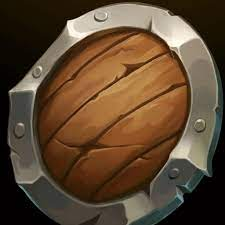
Escudo de Doran
El Escudo de Doran proporciona a los campeones que lo usan una cantidad adicional de vida, regeneración de vida y armadura. Esto lo convierte en una buena opción para los campeones que necesitan sobrevivir a las primeras etapas del juego, especialmente aquellos que juegan en la línea superior o en la jungla.
-
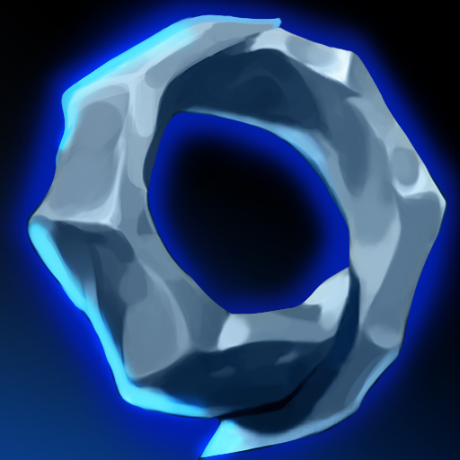
Sortija de Doran
La Sortija de Doran proporciona a los campeones que la usan una cantidad adicional de poder de habilidad, maná y regeneración de maná. Esto la convierte en una buena opción para los campeones que dependen mucho de sus habilidades para causar daño o curarse, especialmente aquellos que juegan en la línea central. La Sortija de Doran también tiene una pasiva única llamada "Afinidad de hechizos", que otorga al portador un 4% de reducción del tiempo de enfriamiento en sus habilidades. Esta pasiva puede ser muy útil en las primeras etapas del juego, ya que puede permitir que los campeones lancen más habilidades durante una pelea y tener una ventaja en los intercambios.
-
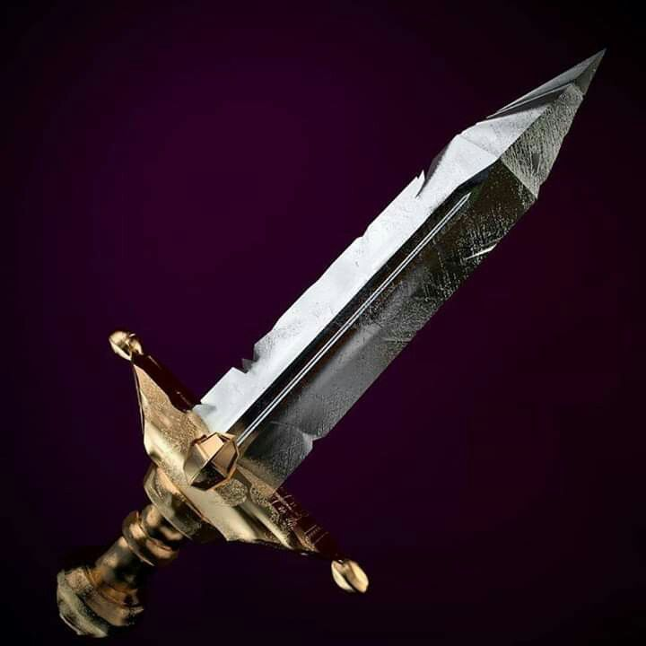
Espada de Doran
La Espada de Doran proporciona a los campeones que la usan una cantidad adicional de daño de ataque, vida y regeneración de vida. Esto la convierte en una buena opción para los campeones que dependen de sus ataques básicos para causar daño, especialmente aquellos que juegan en la línea superior o en la jungla. La Espada de Doran también tiene una pasiva única llamada "Golpe vital", que otorga al portador un 3% de oportunidad de infligir un daño crítico con cada ataque básico. Esta pasiva puede ser muy útil en las primeras etapas del juego, ya que puede permitir que los campeones infligan un daño significativo con un solo ataque y tener una ventaja en los intercambios.
Objetos Basicos
Los objetos básicos son los objetos que los jugadores pueden comprar en League of Legends para aumentar sus estadísticas y mejorar su capacidad para causar daño, curarse, ganar velocidad, etc. Estos objetos se construyen a partir de componentes y pueden actualizarse a objetos más poderosos a medida que avanza el juego.
-
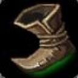
Botas De Velocidad
Este objeto proporciona una velocidad adicional que permite a los jugadores moverse más rápido por el mapa.
-
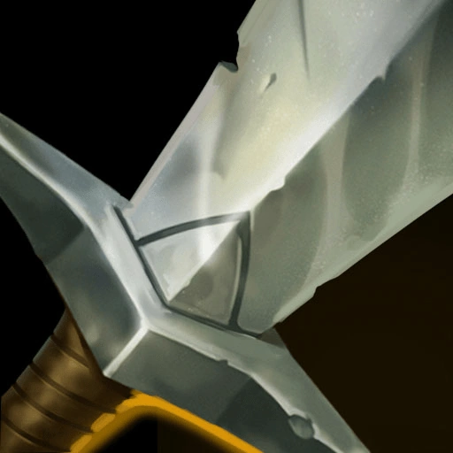
Espada Larga
La Espada Larga proporciona una cantidad adicional de daño de ataque.
-
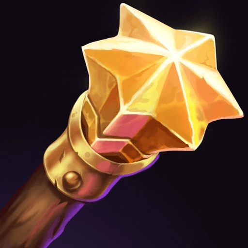
Barita Amplificadora
La Varita Amplificadora proporciona una cantidad adicional de poder de habilidad
Objetos Epicos
Los objetos épicos proporcionan estadísticas adicionales o un efecto especial. Algunos de los objetos épicos ofrecen efectos que son menores comparados con los objetos legendarios en los que se transforman.
-
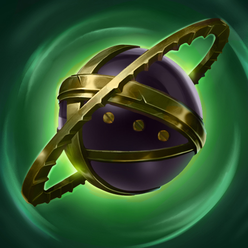
Orbe Del Olvido
El Orbe del Olvido proporciona una cantidad significativa de poder de habilidad y un aumento del 15% de penetración mágica. Además, cuando un campeón enemigo está bajo efecto de alguna forma de reducción de curación, como la herida grave, el Orbe del Olvido también inflige un 40% de daño mágico adicional.
-
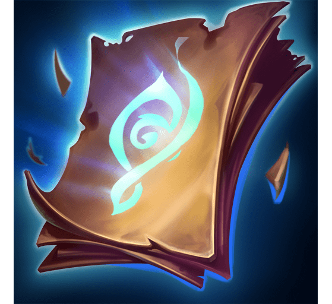
capitulo Perdido
El Capítulo Perdido se puede mejorar posteriormente a un objeto más poderoso como el Luden's Echo, que aumenta aún más el poder de habilidad, el maná y la restauración de maná. También otorga una explosión de daño mágico adicional en un área pequeña después de lanzar habilidades.
-
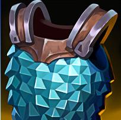
Cota De Malla
La Cota de Malla se puede construir a partir de un Manto de Tela y 400 de oro. Además de proporcionar una cantidad significativa de armadura, la Cota de Malla también se puede mejorar a objetos más poderosos, como el Chaleco de Acero de Randuin o la Capa de Fuego Solar.
Objetos Legendarios
Los objetos Legendarios en League of Legends son aquellos que proporcionan beneficios poderosos y únicos que pueden tener un gran impacto en el juego. Estos objetos a menudo tienen componentes caros y requieren tiempo para construirlos.
-
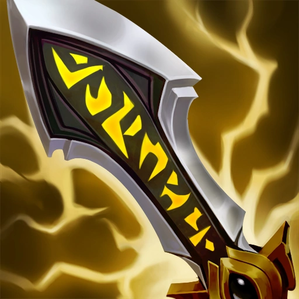
Filo Del Infinito
El Filo Infinito proporciona una cantidad significativa de daño de ataque y aumenta la posibilidad de golpes críticos. Además, aumenta el daño crítico y causa un daño adicional cuando se produce un golpe crítico.
-
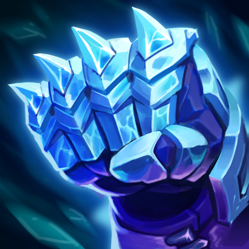
Guantelete de hielo:
El Guantelete de Hielo proporciona una cantidad significativa de armadura y reduce la velocidad de movimiento de los enemigos cercanos al atacarlos.
-

Morellonomicón
El Morellonomicón proporciona una cantidad significativa de poder de habilidad y aplica una herida grave a los enemigos, lo que reduce su capacidad para curarse
Objetos de Miticos
Cada objeto mítico tiene una pasiva única que proporciona a los campeones que los construyen una ventaja significativa en el juego. Además, los objetos míticos también proporcionan estadísticas secundarias y pasivas adicionales.
-

Angustia De Liandry
El efecto único de este objeto es "Locura de Liandry", que inflige un 1,5% de la vida máxima del objetivo como daño mágico durante 3 segundos cuando se daña a un campeón con una habilidad. Además, este efecto aumenta a un 5% de la vida máxima del objetivo durante 3 segundos si el objetivo está inmovilizado.
-
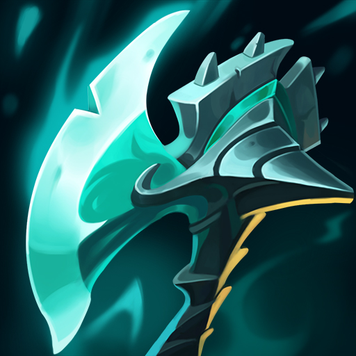
Cosechador Nocturno
El Cosechador Nocturno proporciona estadísticas de daño de ataque, letalidad, velocidad de ataque y reducción de enfriamiento. Además, su efecto único, "Cosecha" permite al jugador obtener una pila por cada enemigo que asesine. Estas pilas otorgan daño adicional de ataque y velocidad de ataque durante un breve periodo de tiempo.
-
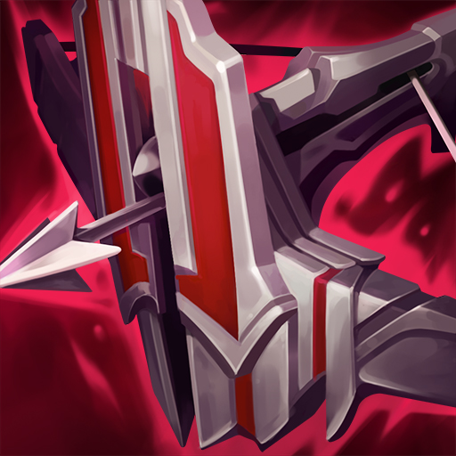
Arcoescudo Inmortal
El Arcoescudo Inmortal proporciona estadísticas de daño de ataque, velocidad de ataque y vida. Además, su efecto único, "Escudo de Hierro" permite al jugador crear un escudo temporal y aumenta su vida máxima temporalmente cuando recibe daño de campeones enemigos.